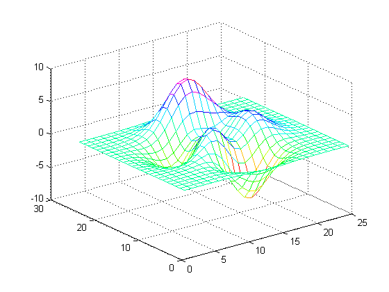

3-D Plots
Here are some examples of surface plots in MATLAB®.
Contents
Mesh Plot of Peaks
z=peaks(25); mesh(z); colormap(hsv)
Surface Plot of Peaks
z=peaks(25); surf(z); colormap(jet);

Surface Plot (with Shading) of Peaks
z=peaks(25);
surfl(z);
shading interp;
colormap(pink);

Contour Plot of Peaks
z=peaks(25); contour(z,16); colormap(hsv)

Quiver
x = -2:.2:2; y = -1:.2:1; [xx,yy] = meshgrid(x,y); zz = xx.*exp(-xx.^2-yy.^2); [px,py] = gradient(zz,.2,.2); quiver(x,y,px,py,2);

Slice
[x,y,z] = meshgrid(-2:.2:2,-2:.25:2,-2:.16:2);
v = x.*exp(-x.^2-y.^2-z.^2);
xslice = [-1.2,.8,2]; yslice = 2; zslice = [-2,0];
slice(x,y,z,v,xslice,yslice,zslice)
colormap hsv